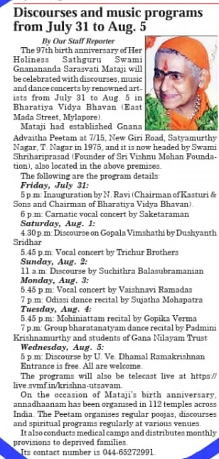
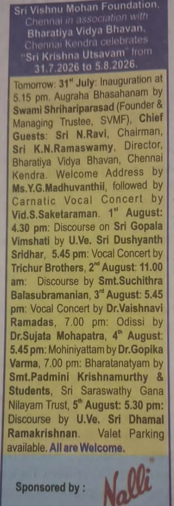
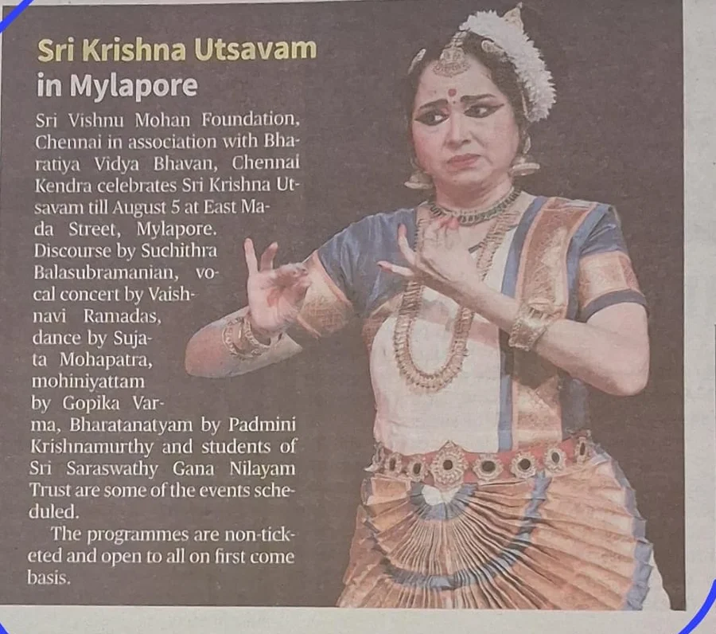
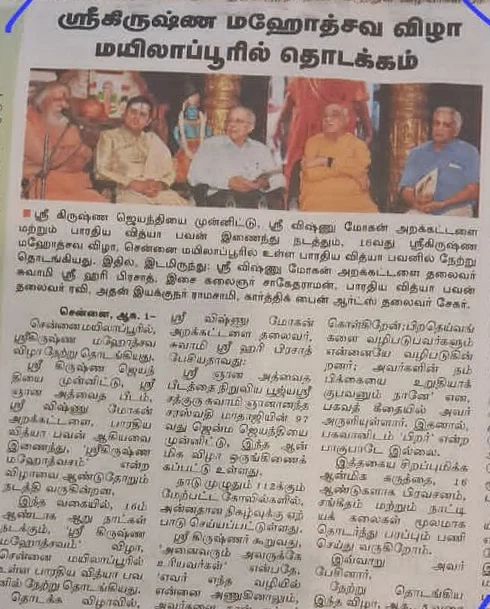
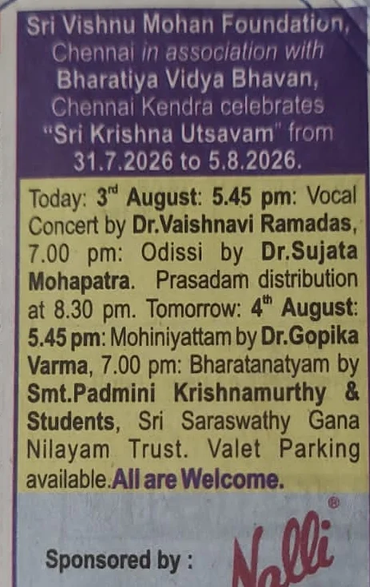

Sri Gnana Advaitha Peetam and Sri Vishnu Mohan Foundation along with Bharatiya Vidya Bhavan presented
16th Edition 31 July to 5 August 2026 Bharatiya Vidya Bhavan, Mylapore, Chennai. Entry was free for all.
Concluded, with gratitude
Across six days and nine performances, the streams were watched more than 14,500 times, from across India and overseas. Thank you for being part of the sixteenth utsavam. Watch the recordings.

Celebrating Sri Krishna,
for the sixteenth year
Every year, around Sri Krishna Janmashtami and the Jayanti of our Guru Sri Sathguru Ma, the Sri Krishna Utsavam is held in Chennai. Six days in which we remember, adore and celebrate the life and teachings of Sri Krishna through music, dance and the spoken word.
The Sri Vishnu Mohan Foundation and Sri Gnana Advaitha Peetam are not-for-profit organisations working to bring people together and end social disharmony, guided by the self-transforming philosophy of Sri Krishna as explained by Her Holiness Sri Sathguru Swami Gnanananda Sarasvathi Ma.
In Sanatana Dharma the Divine is celebrated not only through meditation and prayer, but through sculpture, painting, dance, music, talks and satsang. The utsavam is our offering in all of those arenas at once: free, open, and for everyone.
For Her Holiness Sri Sathguru Ma, Sri Krishna is the eternal friend, companion, fellow traveller, and guide on the journey to self-transformation.
- 6Days
- 9Concerts, recitals and discourses
- 16thEdition
- FreeEntry for all
- 14,500+Times the streams were watched

Watch the recordings
All six days were streamed live from the Bhavan hall, and every recording is kept here. Choose a day and press play. No ticket, no sign-up.
-
Day 1, Friday 31 July
Vid. S. Saketaraman
Inauguration, then a Carnatic vocal concert
-
Day 2, Saturday 1 August
Sri. Dushyanth Sridhar, and the Trichur Brothers
Discourse on Sri Gopala Vimshati, then a Carnatic vocal concert
-
Day 3, Sunday 2 August
Vid. Suchithra Balasubramanian
Morning discourse
-
Day 4, Monday 3 August
Dr. Vaishnavi Ramadas, and Dr. Sujata Mohapatra
Carnatic vocal concert, then an Odissi recital
-
Day 5, Tuesday 4 August
Dr. Gopika Varma, and Vid. Padmini Krishnamurthy with students
Mohiniyattam, then a Bharatanatyam recital
-
Day 6, Wednesday 5 August
U. Ve. Sri. Dhamal Ramakrishnan
Closing discourse
The recordings also live on the SVMF YouTube channel. Subscribe there and YouTube will tell you when next year's utsavam streams.
Nine artists, six days
-

Opened the utsavam
Vid. S. Saketaraman
Carnatic vocal concert
-

Sri. Dushyanth Sridhar
Discourse on Sri Gopala Vimshati
-

Trichur Brothers
Carnatic vocal concert
-

Vid. Suchithra Balasubramanian
Discourse
-

Dr. Vaishnavi Ramadas
Carnatic vocal concert
-

Dr. Sujata Mohapatra
Odissi dance recital
-

Dr. Gopika Varma
Mohiniyattam dance recital
-

Vid. Padmini Krishnamurthy and students
Bharatanatyam, Sri Saraswathy Gana Nilayam Trust
-

U. Ve. Sri. Dhamal Ramakrishnan
Discourse
The invitation cards
The printed cards that went out for each day, kept here as a keepsake. Tap any one to save it, or to send it on with a note pointing to the recordings.
In the news
What the papers wrote about the sixteenth utsavam. Tap a clipping to read it full size.
-

Mambalam Times 26 July 2026 -

Events column 30 July 2026 -

The Hindu Downtown 1 August 2026 -

Dinamalar 1 August 2026 -

Events column 3 August 2026